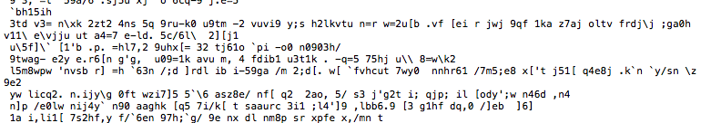
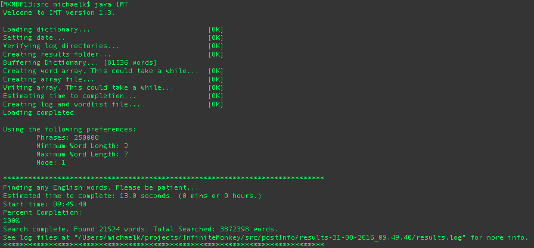

Java Infinite Monkey Theorem Model
About the IMT Project
This application simulates the Infinite Monkey theory (which states that a monkey, typing into infinity will eventually type a well known piece of literature) by creating sentence-like gibberish and finding english words.
Originally starting out as a fun side project, I continued to develop this program, making it faster and faster. Currently the limiting factor is not its speed but in fact its memory usage. The speed can be made faster with threading, I would think but the memory usage is a bit more interesting of a problem.
Example of Operation
Various settings can be specified to create different patterns of gibberish (to simulate different monkeys, typewriters, etc). An example would be text that looks like this:

Below is an example output of the program scanning 3.9 million possible words randomly generated, and finding 21.5 thousand real english words in just over 13 seconds.

For this particular run, the results are shown below:
Percentage of word lengths as follows:
2 letters: 17510 (81.35%)
3 letters: 3716 (17.26%)
4 letters: 281 (1.31%)
5 letters: 16 (0.07%)
6 letters: 1 (0%)
7 letters: 0 (0%)
Please note: this program does not simulate any physical interaction that normal monkeys may have with a typewriter.

© Michael Kafarowski 2018  Built from the ground up!
Built from the ground up!